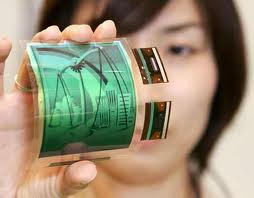

Customer Support:
Technology has made available a wide range of customer service tools. They range from support websites and the ability to have live chats with technical staff to databases tracking individual customers' preferences, pattern of buying, payment methods etc.,
Tailoring products and service responses based on this advanced data. Specialist software that is designed for the tracking of service levels and for helping recognize areas for improvement are often integrated into other enterprise operational software tools .
Customer relationship management software is defined as business management and automation of the front-office divisions of an organization. CRM software is essentially meant to address the needs of Marketing, Sales and Distribution and Customer Service and Support divisions within an organization and allow the three to share data on prospects, customers, partners, competitors and employees. The purpose of CRM software is to manage the customer through the entire lifecycle,
New research and technology indicates that innovation has less to do with inventions and more to do with keeping an eye customer service.Over the course of the past year, We have discovered what can be seen as the single most important aspect of our business : delivering top-notch customer service.